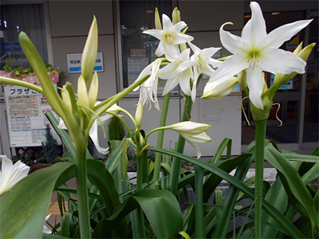

今年も被爆ハマユウが咲きました

1945年8月、一瞬のうちに全てを焼き尽くした原子爆弾による被爆から69年目の夏が近づいています。放射能によって「75年間は草木も生えぬ」とまでいわれた広島の焼土と瓦礫のなかから、新しい緑の葉を伸ばして生きていたのがハマユウ（浜木綿）でした。
この被爆したハマユウを核の脅威がなくなるまで、反核・平和のシンボルとして広げようと、被爆ハマユウの普及の活動が全国各地で続けられています。
さいたま市南浦和にあるコープみらいの組合員施設「コーププラザ浦和」の玄関では、梅雨空の下で今年も被爆ハマユウの純白の花が咲きました。
コープみらいでは、2005年に、発見者の意志を引き継ぐ被爆ハマユウクラブから1株を譲り受け、以来、大切に育てられています。
被爆ハマユウは、コーププラザ浦和のほか、県内5ヶ所のコーププラザや、東松山市下唐子の原爆の図丸木美術館でも育てられています。
＊被爆ハマユウ
広島の爆心地から約2KMにある比治山の旧陸軍船舶砲兵隊跡地で終戦後に見つかりました。隊員の食事を担当していた尾島良平さんが兵舎の横に植えていたもので、戦後、比治山を訪ねた尾島さん自身が見つけたものです。尾島さんは平和への願いを込めて各地に植えてきましたが、尾島さんの没後、被爆ハマユウクラブがその意思を引き継いで活動を続けています。コーププラザのハマユウもその一株を譲り受けて育ったものです。
＊コープみらい「コーププラザ浦和」
 案内はこちら（コープみらいホームページ）
案内はこちら（コープみらいホームページ）
さいたま市南区南本町2－10－10
JR京浜東北線・武蔵野線「南浦和駅」西口下車
さいたまの生協は、今年も平和の取り組みをすすめます
この夏、埼玉県生協連は下記の活動に取り組みます。
■2015年NPT再検討会議に向けた埼玉の生協 キックオフ集会
「被爆者援護と核兵器禁止条約の締結に向けて」
被爆・終戦から70年の来年2015年、NPT（核不拡散条約）再検討会議が開催されます。来年のNPT再検討会議で、核兵器廃絶へ具体的な進展が得られるよう、会議の成功に向けて「2015NPT再検討会議成功に向けた埼玉の生協・キックオフ集会」を開催します。
- 日時：
- 2014年7月4日（金）14：00～16：30
- 会場：
- 浦和コミュニティセンター 9階 第15集会室（参加費無料）
- 主催：
- 埼玉県生活協同組合連合会
■第29回 埼玉県原爆死没者慰霊式
原爆によって亡くなられたご家族や友人の鎮魂と、核兵器が世界からなくなることを願って、毎年、原爆死没者の慰霊式を行っています。
- 日時：
- 2014年7月27日（日）10：00～12：00
- 会場：
- 別所沼公園「原爆死没者慰霊碑」前
- 主催：
- 第29回埼玉県原爆死没者慰霊式実行委員会
- 参加費：
- 無料
■平和のための埼玉の戦争展
戦後69年、戦争を知らない世代が8割を超える中、今、体験者から聴き、想像し、記憶し、伝え続けていくことが求められています。戦争も核兵器もない、誰もが平和に生きられる社会、飢餓と貧困のない社会、安心して生きられる社会について学び、考える機会として、ぜひお運びください。
- 日時：
- 2014年8月2日（土）～4日（月）10：30～
- 会場：
- 浦和コルソ 7階ホール
- 主催：
- 2014平和のための埼玉の戦争展実行委員会
入場無料
お問い合わせは
埼玉県生活協同組合連合会
電話 048-844－8971
さいたま市浦和区岸町7－11－5